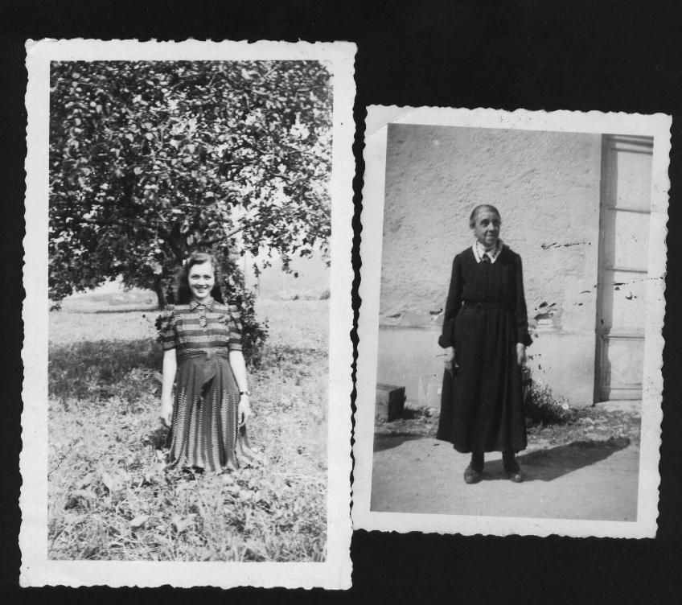
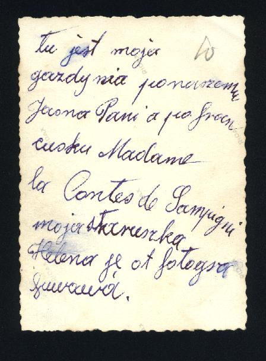

A
TOUCH OF FRANCE
Part of the family from the
village of Dudynce immigrated to France. These were my great aunt,
Margaret Kotlarz and her mother Maria Wdowiak Warcholyk Kotlarz. The
family story is that Margaret was sent to Paris France to avoid the
coming war. There she married a Jewish jewelry merchant (surname
unknown). Sometime later, her mother Maria joined her. As a child, I
remember my grandmother getting letters from her sister, Margaret.
This was probably just prior to WWII. One of my uncles remembers that
his grandmother (Maria Wdowiak Warcholyk Kotlarz) died in France.
Recently found were two photographs which I have posted here, one
showing the French landlady, Contes de Sampigny and the other showing
a young girl named Helen, who may have been my great aunt’s
child. There is a town called Sampigny in the Lorraine district of
France. This is all I know about the French Connection.
At present there are less than
1000 residents in the town of Sampigny.

This note, on the back of
one of the photographs, says something like “here is my
landlady, Madame la Contes de Sampigni and my darling Helena.”

main
menu